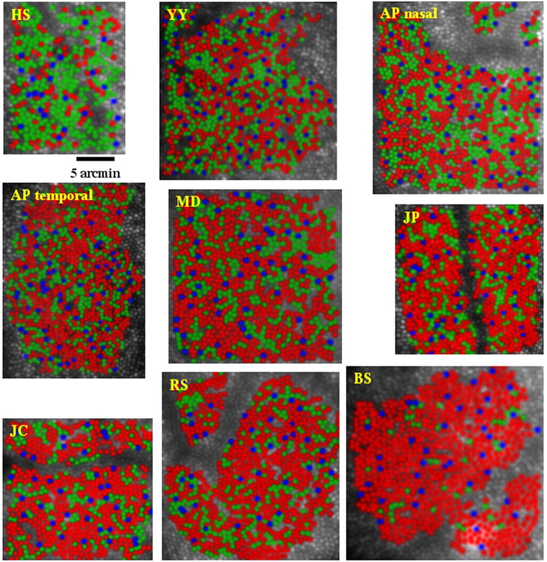
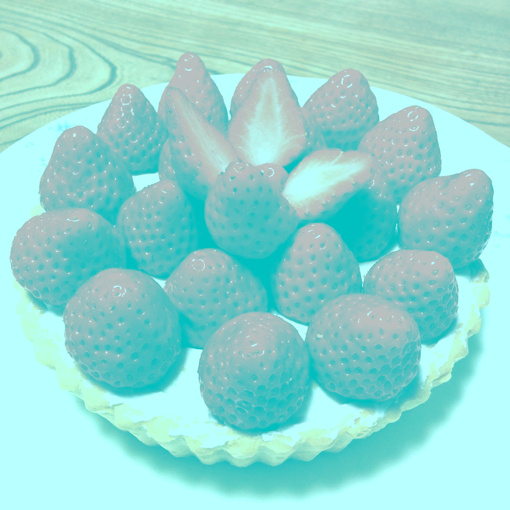
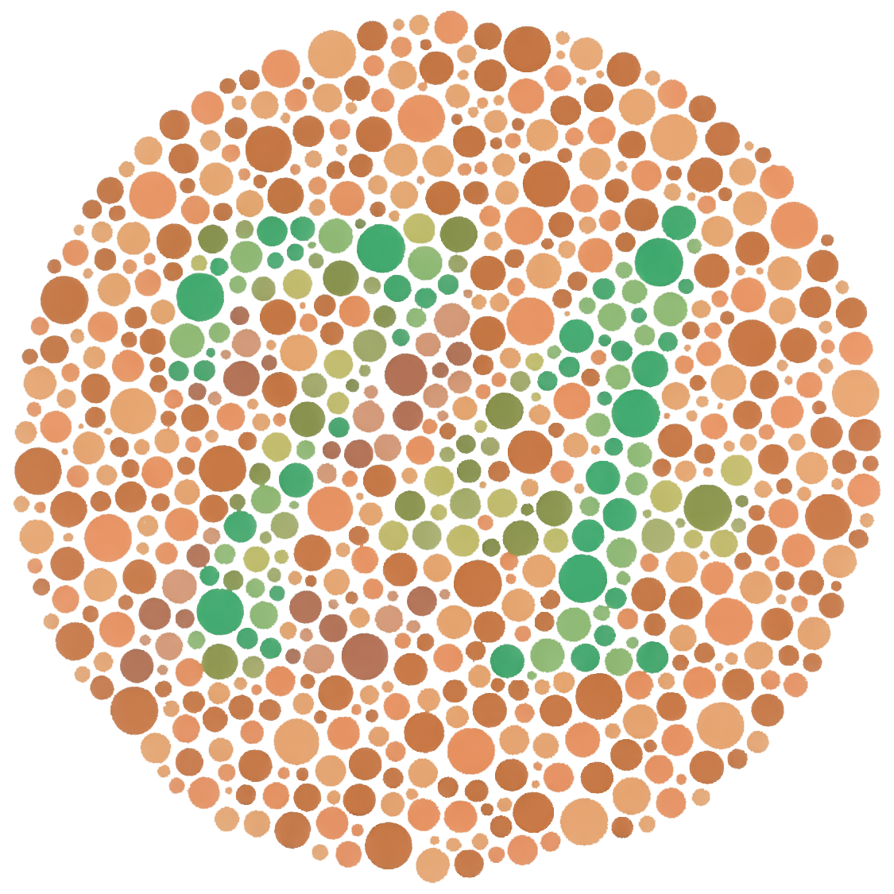
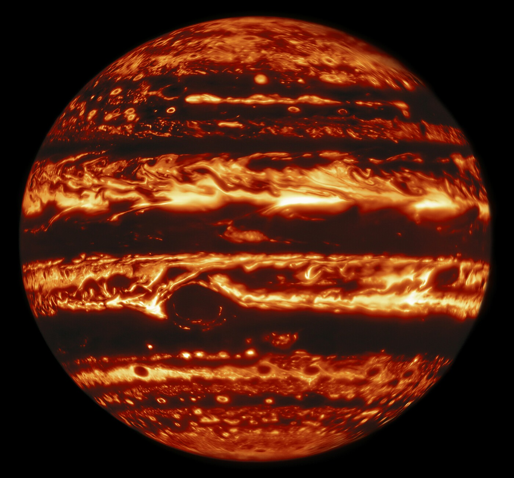
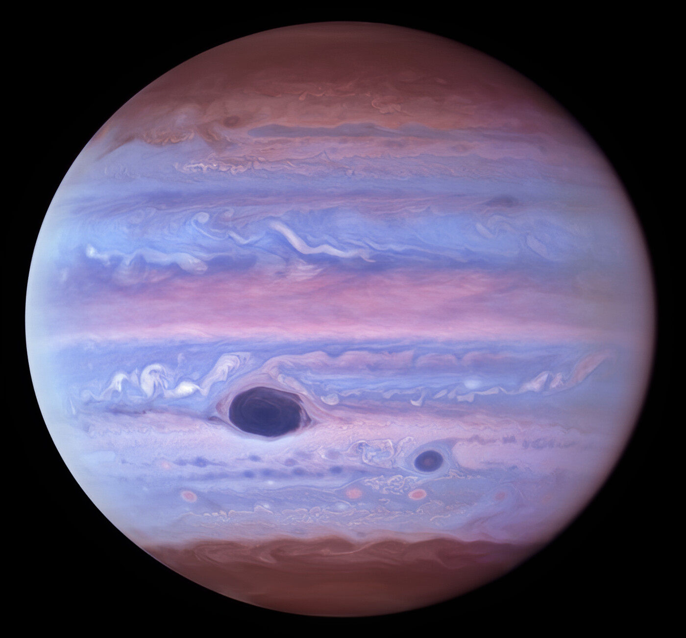

a talk by @AhoyLemon
Your brain is dumb, color is a lie, and purple is impossible.
Color doesn't exist.
(light has a wavelength. that's all it has.)

Your eye writes three numbers.
Hofer et al., Journal of Neuroscience, 2005
Your brain makes up the rest.
Akiyoshi Kitaoka's "Strawberry Illusion"Only in Spanish
- celeste
- sky blue
- trigueño
- the color of wheat
- zarco
- pale blue eyes
- moreno
- tanned or brunette
- canoso
- going gray
- bermejo
- strawberry blond
- pardo
- grayish brown
- amoratado
- bruise purple
Only in English
- teal
- verde azulado
- hazel
- color avellana
- auburn
- castaño rojizo
- taupe
- gris topo
- eggshell
- blanco cáscara de huevo
- periwinkle
- azul pervinca
- puce
- color pulga
What does that say about us?
Pieter Bruegel the Elder, The Tower of Babel, 1563Orange.
The fruit: ~1380.
The color: ~1502.
#cc8039That's why redheads are red.
Photo: Romina Espinosarojo
«… de un rubio muy vivo»
of hair: a very bright blond
#ff8000100%#cc660080%#994d0060%#733a0045%#4d260030%There's no such thing as brown.
(it's orange with the lights turned down)
Purple isn't real.
Photo: WilfredorDoes democracy work?
Democracy works.
Light is a line.
Your brain bends it into a horseshoe.
Then fills the gap with purple.
#6f5895no wavelengthYour brain made that up.
Hubble
Webb
NASA, ESA, CSA, STScIEvery spaceship has its own sensors.
Photo: NASA
Just like you.
Some of you are colorblind.
Photo: Daderot

infrared
ultraviolet
We're all colorblind.
Gemini North and Hubble, M. H. Wong et al.You'll never see what someone else sees.
NASA, ESA, CSA, STScIYou're at a party.
Go ask someone what they see.
Photo: KuldeepRawat07
Hola, Mexico!
I fixed your paella.
What is this thing?
You're doing fish sticks wrong.
I'm going to get some real Spanish food.
I'm going to get some real Spanish food.